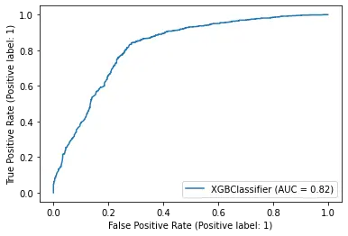

Extreme Gradient Boosting (XGBoost)
Wrangling with Hyperparameters | Detailed Guide
🧾 1. Extreme Gradient Boosting (XGBoost)
XGBoost is an open-source software library which provides a regularizing gradient boosting framework for C++, Java, Python, R, Julia, Perl, and Scala. It works on Linux, Windows, and macOS. From the project description, it aims to provide a "Scalable, Portable and Distributed Gradient Boosting Library".
Extreme Gradient Boosting Algorithm. Gradient boosting refers to a class of ensemble machine learning algorithms that can be used for classification or regression predictive modeling problems. Ensembles are constructed from decision tree models.
XGBoost is a more regularized form of Gradient Boosting. XGBoost uses advanced regularization (L1 & L2), which improves model generalization capabilities. XGBoost delivers high performance as compared to Gradient Boosting. Its training is very fast and can be parallelized across clusters.

XGBoost | Wrangling with Hyperparameters | Detailed Guide
Extreme Gradient Boosting (xgboost) is similar to gradient boosting framework but more efficient. It has both linear model solver and tree learning algorithms. So, what makes it fast is its capacity to do parallel computation on a single machine...
🛠 2. Hyperparameters
What is meant by hyperparameter tuning?
In machine learning, hyperparameter optimization or tuning is the problem of choosing a set of optimal hyperparameters for a learning algorithm. A hyperparameter is a parameter whose value is used to control the learning process. By contrast, the values of other parameters (typically node weights) are learned. The hyper-parameter tuning process is a tightrope walk to achieve a balance between underfitting and overfitting. Underfitting is when the machine learning model is unable to reduce the error for either the test or training set.
What is hyperparameter tuning example?
Some examples of model hyperparameters include: The penalty in Logistic Regression Classifier i.e. L1 or L2 regularization. The learning rate for training a neural network. The C and sigma hyperparameters for support vector machines.
Why do we use hyperparameter tuning?
Hyperparameter tuning is an essential part of controlling the behavior of a machine learning model. If we don't correctly tune our hyperparameters, our estimated model parameters produce suboptimal results, as they don't minimize the loss function. This means our model makes more errors.
⌛️ 3. XGBoost Hyperparameters for Classification
-> gbtree :
- gbtree for tree-based models;
-> gblinear :
- gblinear for linear models to run at each iteration.
-> dart :
- dart is also a tree based model.
- XGBoost mostly combines a huge number of regression trees with a small learning rate. In this situation, trees added early are significant and trees added late are unimportant. Vinayak and Gilad-Bachrach proposed a new method to add dropout techniques from the deep neural net community to boosted trees, and reported better results in some situations - it s called dart. It drops trees in order to solve the over-fitting. Trivial trees (to correct trivial errors) may be prevented. Because of the randomness introduced in the training, expect the following few differences: Training can be slower than gbtree because the random dropout prevents usage of the prediction buffer. The early stop might not be stable, due to the randomness.
It relates to which booster we are using to do boosting, commonly tree or linear model
1. booster [default=gbtree]
- gbtree for tree-based models; gblinear for linear models to run at each iteration.
2. silent [default=0]:
- To activate Silent silent mode, set it to 1,meaning off; so, no messages will be printed.
It’s generally a good idea, to keep it 0 as the messages might help in understanding the model; and how the metrics are going.
3. nthread [default to maximum number of threads available if not set]
This is used for parallel processing and number of cores in the system should be entered If you wish to run on all cores, value should not be entered and algorithm will detect automatically
depend on which booster you have chosen. We will discuss about tree based boosters here.
1. eta [default=0.3]
- Similiar to learning_rate; works with geeneralization.
- Typical final values to be used: 0.01-0.2
2. min_child_weight [default=1]
- Defines the minimum sum of weights of all observations required in a child. It is used to control over-fitting. Higher values prevent a model from learning - relations which might be highly specific to the particular sample selected for a tree.
- Too high values can lead to under-fitting hence, it should be tuned using CV.
3. max_depth [default=6]
- The maximum depth of a tree, it is also used to control over-fitting as higher depth will allow model to learn relations very specific to a particular sample. Should be tuned using CV.
- Typical values: 3-10
4. max_leaf_nodes
- The maximum number of terminal nodes or leaves in a tree.
- Since binary trees are created, a depth of ‘n’ would produce a maximum of 2^n leaves. If this is defined, GBM will ignore max_depth.
5. gamma [default=0]
- A node is split only when the resulting split gives a positive reduction in the loss function. Gamma specifies the minimum loss reduction required for a split to occur.
- Makes the algorithm conservative. The values can vary depending on the loss function and should be tuned. Can be used to control overfitting.
6. max_delta_step [default=0]
- In maximum delta step we allow each tree’s weight estimation to be. If the value is set to 0, it means there is no constraint. If it is set to a positive value, it can help making the update step more conservative.
- This is generally not used.
7. subsample [default=1]
- It denotes the fraction of observations to be randomly samples for each tree.
- Lower values make the algorithm more conservative and prevents overfitting but too small values might lead to under-fitting.
- Typical values: 0.5-1
8. colsample_bytree [default=1]
- Denotes the fraction of columns to be randomly samples for each tree. Smaller colsample_bytree povides additional regulerization.
- Typical values: 0.5-1
9. colsample_bylevel [default=1]
- Denotes the subsample ratio of columns for each split, in each level.
10. alpha [default=0]
- L1 regularization term.
- L1 regularization forces the weights of uninformative features to be zero by substracting a small amount from the weight at each iteration and thus making the weight zero, eventually. It is also called regularization for simplicity. Applies on leaf weights (rather than feature weights); larger value mean more regularization.
11. lambda [default=1]
- L2 regularization term.
- This used to handle the regularization part of XGBoost. It should be explored to reduce overfitting.
- L2 regularization acts like a force that removes a small percentage of weights at each iteration. Therefore, weights will never be equal to zero. L2 regularization penalizes (weight)² There is an additional parameter to tune the L2 regularization term which is called regularization rate (lambda).
- Smoother than alpha. Also, applies on leaf weights.
12. scale_pos_weight [default=1]
- A value greater than 0 should be used in case of high class imbalance as it helps in faster convergence.
decide on the learning scenario. For example, regression tasks may use different parameters with ranking tasks.
1. objective [default=reg:linear]
- This defines the loss function to be minimized.
- Mostly used values are:
- reg:linear - used for regressions
- reg:logistic - used for classification, when you want the decision only, not the probability.
- binary:logistic –logistic regression for binary classification, returns predicted probability (rather than decision class)
- multi:softmax –multiclass classification using the softmax objective, returns predicted class (not probabilities); you also need to set an additional num_class (number of classes) parameter defining the number of unique classes
- multi:softprob –same as softmax, but returns predicted probability of each data point belonging to each class.
2. eval_metric [ default according to objective ]
- The metric to be used for validation data.
- The default values are rmse for regression and error for classification.
- Typical values are:
- rmse – root mean square error
- mae – mean absolute error
- logloss – negative log-likelihood
- error – Binary classification error rate (0.5 threshold)
- merror – Multiclass classification error rate
- mlogloss – Multiclass logloss
- auc – Area under the curve
3. seed [default=0]
- for reproducibility.
- relate to behavior of CLI version of XGBoost.
🧮 4. Understanding Bias-Variance Tradeoff
If you take a machine learning or statistics course, this is likely to be one of the most important concepts. When we allow the model to get more complicated (e.g. more depth), the model has better ability to fit the training data, resulting in a less biased model. However, such complicated model requires more data to fit.
Most of parameters in XGBoost are about bias variance tradeoff. The best model should trade the model complexity with its predictive power carefully. Parameters Documentation will tell you whether each parameter will make the model more conservative or not. This can be used to help you turn the knob between complicated model and simple model.
More Resources :
📑 6. Best approch to Hyper parameter tuning
import numpy as np
import pandas as pd
import os
import seaborn as sns
import matplotlib.pyplot as plt
from scipy import stats
import warnings
import json
from sklearn import manifold
from sklearn.model_selection import train_test_split
from sklearn.preprocessing import OrdinalEncoder
import xgboost as xgb
from sklearn.model_selection import RandomizedSearchCV, GridSearchCV
from sklearn.model_selection import StratifiedKFold
from sklearn.metrics import roc_auc_score
from sklearn.metrics import classification_report
from sklearn.model_selection import cross_val_score, KFold
from sklearn.metrics import confusion_matrix
from xgboost import plot_tree
warnings.filterwarnings('ignore')warnings.filterwarnings('ignore')def process_df(df):
df=df.drop(['Name','PassengerId'],axis=1)
df=df.dropna()
target=df['Transported']
df=df.drop(['Transported'],axis=1)
target = target.astype(int)
df['Cabin_1']= df['Cabin'].str[0]
df['Cabin_2']= df['Cabin'].str[2]
df['Cabin_3']= df['Cabin'].str[5]
df=df.drop(['Cabin'],axis=1)
# Create the training and test datasets
X_train, X_test, y_train, y_test = train_test_split(df,
target,
test_size = 0.2,
random_state=100,
stratify=target)
numaric_columns=list(df.select_dtypes(include=np.number).columns)
print("Numaric columns ("+str(len(numaric_columns))+") :",", ".join(numaric_columns))
cat_columns=df.select_dtypes(include=['object']).columns.tolist()
print("Categorical columns ("+str(len(cat_columns))+") :",", ".join(cat_columns))
X_train_n=X_train[numaric_columns]
X_test_n=X_test[numaric_columns]
X_train_c=X_train[cat_columns]
X_test_c=X_test[cat_columns]
encoder=OrdinalEncoder()
X_train_c = encoder.fit_transform(X_train_c)
X_train_c=pd.DataFrame(X_train_c)
X_test_c = encoder.transform(X_test_c)
X_test_c=pd.DataFrame(X_test_c)
i=1
for column in X_train_c:
X_train_n["cat_"+str(i)]=X_train_c[column]
X_test_n["cat_"+str(i)]=X_test_c[column]
i=i+1
#X_train=pd.concat([X_train_n,X_train_c],axis=1,ignore_index=True)
#X_test=pd.concat([X_test_n,X_test_c],axis=1,ignore_index=True)
X_train_n=X_train_n.fillna(X_train_n.mean())
X_test_n=X_test_n.fillna(X_test_n.mean())
return X_train_n, X_test_n, y_train, y_testdf= pd.read_csv("/kaggle/input/spaceship-titanic/train.csv")
df.head()| PassengerId | HomePlanet | CryoSleep | Cabin | Destination | Age | VIP | RoomService | FoodCourt | ShoppingMall | Spa | VRDeck | Name | Transported | |
|---|---|---|---|---|---|---|---|---|---|---|---|---|---|---|
| 0 | 0001_01 | Europa | False | B/0/P | TRAPPIST-1e | 39.0 | False | 0.0 | 0.0 | 0.0 | 0.0 | 0.0 | Maham Ofracculy | False |
| 1 | 0002_01 | Earth | False | F/0/S | TRAPPIST-1e | 24.0 | False | 109.0 | 9.0 | 25.0 | 549.0 | 44.0 | Juanna Vines | True |
| 2 | 0003_01 | Europa | False | A/0/S | TRAPPIST-1e | 58.0 | True | 43.0 | 3576.0 | 0.0 | 6715.0 | 49.0 | Altark Susent | False |
| 3 | 0003_02 | Europa | False | A/0/S | TRAPPIST-1e | 33.0 | False | 0.0 | 1283.0 | 371.0 | 3329.0 | 193.0 | Solam Susent | False |
| 4 | 0004_01 | Earth | False | F/1/S | TRAPPIST-1e | 16.0 | False | 303.0 | 70.0 | 151.0 | 565.0 | 2.0 | Willy Santantines | True |
X_train, X_test, y_train, y_test = process_df(df)
print(X_train.shape, X_test.shape, y_train.shape, y_test.shape)Numaric columns (6) : Age, RoomService, FoodCourt, ShoppingMall, Spa, VRDeck
Categorical columns (7) : HomePlanet, CryoSleep, Destination, VIP, Cabin_1, Cabin_2, Cabin_3
(5411, 13) (1353, 13) (5411,) (1353,)
Base parameters :
- booster = "gbtree", as it is a classification problem
- objective = "binary:logistic", as per the problem
- tree_method="gpu_hist" using GPU
def xgb_helper(PARAMETERS,V_PARAM_NAME=False,V_PARAM_VALUES=False,BR=10):
temp_dmatrix =xgb.DMatrix(data=X_train, label=y_train)
if V_PARAM_VALUES==False:
cv_results = xgb.cv(dtrain=temp_dmatrix, nfold=5,num_boost_round=BR,params=PARAMETERS, as_pandas=True, seed=123 )
return cv_results
else:
results=[]
for v_param_value in V_PARAM_VALUES:
PARAMETERS[V_PARAM_NAME]=v_param_value
cv_results = xgb.cv(dtrain=temp_dmatrix, nfold=5,num_boost_round=BR,params=PARAMETERS, as_pandas=True, seed=123)
results.append((cv_results["train-auc-mean"].tail().values[-1],cv_results["test-auc-mean"].tail().values[-1]))
data = list(zip(V_PARAM_VALUES, results))
print(pd.DataFrame(data,columns=[V_PARAM_NAME,"auc"]))
return cv_resultsPARAMETERS={"objective":'binary:logistic',"eval_metric":"auc"}
xgb_helper(PARAMETERS)| train-auc-mean | train-auc-std | test-auc-mean | test-auc-std | |
|---|---|---|---|---|
| 0 | 0.858413 | 0.002187 | 0.821862 | 0.005628 |
| 1 | 0.870282 | 0.001689 | 0.828690 | 0.004939 |
| 2 | 0.876322 | 0.000856 | 0.835879 | 0.002703 |
| 3 | 0.880106 | 0.001456 | 0.838758 | 0.004261 |
| 4 | 0.884137 | 0.001624 | 0.838674 | 0.003967 |
| 5 | 0.887057 | 0.001697 | 0.841544 | 0.003510 |
| 6 | 0.889695 | 0.002341 | 0.842214 | 0.005057 |
| 7 | 0.891214 | 0.002497 | 0.842708 | 0.005743 |
| 8 | 0.892886 | 0.002178 | 0.843644 | 0.005887 |
| 9 | 0.893928 | 0.002417 | 0.844092 | 0.005543 |
# Create the DMatrix: housing_dmatrix
housing_dmatrix =xgb.DMatrix(data=X_train, label=y_train)
# Create the parameter dictionary for each tree: params
params = {"objective":"binary:logistic", "max_depth":5}
# Create list of number of boosting rounds
num_rounds = [5, 10, 15, 20, 25]
# Empty list to store final round rmse per XGBoost model
final_rmse_per_round = []
# Iterate over num_rounds and build one model per num_boost_round parameter
for curr_num_rounds in num_rounds:
# Perform cross-validation: cv_results
cv_results = xgb.cv(dtrain=housing_dmatrix, params=params, nfold=5, num_boost_round=curr_num_rounds, metrics="auc", as_pandas=True, seed=123)
# Append final round RMSE
final_rmse_per_round.append(cv_results["test-auc-mean"].tail().values[-1])
# Print the resultant DataFrame
num_rounds_rmses = list(zip(num_rounds, final_rmse_per_round))
print(pd.DataFrame(num_rounds_rmses,columns=["num_boosting_rounds","auc"])) num_boosting_rounds auc
0 5 0.840033
1 10 0.843594
2 15 0.845747
3 20 0.845400
4 25 0.844094
Pointers:
- Taking num_boosting_rounds = 10; to avoid overfitting
PARAMETERS={"objective":'binary:logistic',"eval_metric":"auc","learning_rate": 0.5}
xgb_helper(PARAMETERS)| train-auc-mean | train-auc-std | test-auc-mean | test-auc-std | |
|---|---|---|---|---|
| 0 | 0.858413 | 0.002187 | 0.821862 | 0.005628 |
| 1 | 0.872958 | 0.002187 | 0.831666 | 0.004109 |
| 2 | 0.879817 | 0.001506 | 0.836776 | 0.005321 |
| 3 | 0.884087 | 0.002211 | 0.838199 | 0.005545 |
| 4 | 0.888099 | 0.002316 | 0.840862 | 0.006667 |
| 5 | 0.890920 | 0.002014 | 0.841520 | 0.005769 |
| 6 | 0.893914 | 0.001330 | 0.842223 | 0.005199 |
| 7 | 0.896395 | 0.002359 | 0.842609 | 0.005717 |
| 8 | 0.897477 | 0.002852 | 0.842670 | 0.005631 |
| 9 | 0.900422 | 0.002209 | 0.842716 | 0.005787 |
Pointers:
- A good starting Classifier, with train-auc-mean of 0.900422, test-auc-mean of 0.842716. Let;s keep tuning and reduce overfitting.
Tips: Keep it around 3-10.
PARAMETERS={"objective":'binary:logistic',"eval_metric":"auc","learning_rate": 0.5}
V_PARAM_NAME="max_depth"
V_PARAM_VALUES=range(3,10,1)
data=xgb_helper(PARAMETERS,V_PARAM_NAME=V_PARAM_NAME,V_PARAM_VALUES=V_PARAM_VALUES); max_depth auc
0 3 (0.8643899441624237, 0.8434407018878254)
1 4 (0.8762391828253827, 0.8432457875673736)
2 5 (0.8898517716460612, 0.8449580853400329)
3 6 (0.9004222967227931, 0.8427158084686912)
4 7 (0.9107993432039982, 0.8379593667718235)
5 8 (0.9233976130022082, 0.8309442810154544)
6 9 (0.9331601626845524, 0.8328975608830239)
Pointers:
- Taking max_depth 5, as per the score.
Tips: Keep it small for imbalanced datasets,good for balanced
PARAMETERS={"objective":'binary:logistic',"eval_metric":"auc","learning_rate": 0.5,"max_depth":5}
V_PARAM_NAME="min_child_weight"
V_PARAM_VALUES=range(0,5,1)
data=xgb_helper(PARAMETERS,V_PARAM_NAME=V_PARAM_NAME,V_PARAM_VALUES=V_PARAM_VALUES); min_child_weight auc
0 0 (0.8923932136315347, 0.8400307515925263)
1 1 (0.8898517716460612, 0.8449580853400329)
2 2 (0.8878844356167308, 0.8430174554684318)
3 3 (0.8842988914848681, 0.842868768786811)
4 4 (0.8841976959835126, 0.8426672020116197)
Pointers:
- Taking min_child_weight 1, as per the score.
Tips: Keep it small like 0.1-0.2 forstarting. Will be tuned later.
PARAMETERS={"objective":'binary:logistic',"eval_metric":"auc","learning_rate": 0.5,"max_depth":5,"min_child_weight":1}
V_PARAM_NAME = "gamma"
V_PARAM_VALUES = [0.1,0.2,0.5,1,1.5,2]
data=xgb_helper(PARAMETERS,V_PARAM_NAME=V_PARAM_NAME,V_PARAM_VALUES=V_PARAM_VALUES); gamma auc
0 0.1 (0.889994877151358, 0.8443115370456209)
1 0.2 (0.8908020107961383, 0.8447684831269007)
2 0.5 (0.888948000423167, 0.8450077335411604)
3 1.0 (0.888184172336776, 0.8451616022595031)
4 1.5 (0.8875863399894248, 0.8435783340359313)
5 2.0 (0.8861811009373095, 0.8449147712912233)
Pointers:
- Taking gamma t 1, as per the score.
Tips: Keep it small in range 0.5-0.9.
PARAMETERS={"objective":'binary:logistic',"eval_metric":"auc","learning_rate": 0.5,"max_depth":5,"min_child_weight":1,"gamma":1}
V_PARAM_NAME = "subsample"
V_PARAM_VALUES = [.4,.5,.6,.7,.8,.9]
data=xgb_helper(PARAMETERS,V_PARAM_NAME=V_PARAM_NAME,V_PARAM_VALUES=V_PARAM_VALUES); subsample auc
0 0.4 (0.8749532101660904, 0.83281692487631)
1 0.5 (0.8789542430190034, 0.8356286366243391)
2 0.6 (0.8804439995005579, 0.8371190653296372)
3 0.7 (0.8852418637174774, 0.8388110573107215)
4 0.8 (0.8868771320489373, 0.8385871061415084)
5 0.9 (0.8880784719598278, 0.8414592031099557)
Pointers:
- Taking 0.7
Tips: Keep it small in range 0.5-0.9.
PARAMETERS={"objective":'binary:logistic',"eval_metric":"auc","learning_rate": 0.5,"max_depth":5,"min_child_weight":1,"gamma":1,"subsample":0.7}
V_PARAM_NAME = "colsample_bytree"
V_PARAM_VALUES = [.4,.5,.6,.7,.8,.9]
data=xgb_helper(PARAMETERS,V_PARAM_NAME=V_PARAM_NAME,V_PARAM_VALUES=V_PARAM_VALUES); colsample_bytree auc
0 0.4 (0.8737438808751801, 0.831927418798438)
1 0.5 (0.8781175336774438, 0.8371252843166564)
2 0.6 (0.8793282404547682, 0.8362558750372221)
3 0.7 (0.8815593124156965, 0.8382064256388843)
4 0.8 (0.8818068187259996, 0.8414608580897104)
5 0.9 (0.8824219339976163, 0.8391185793280422)
Pointers:
- Taking 0.8
Tips: Based on class imbalance.
PARAMETERS={"objective":'binary:logistic',"eval_metric":"auc","learning_rate": 0.5,"max_depth":5,"min_child_weight":1,
"gamma":1,"subsample":0.7,"colsample_bytree":.8}
V_PARAM_NAME = "scale_pos_weight"
V_PARAM_VALUES = [.5,1,2]
data=xgb_helper(PARAMETERS,V_PARAM_NAME=V_PARAM_NAME,V_PARAM_VALUES=V_PARAM_VALUES); scale_pos_weight auc
0 0.5 (0.8793958985004761, 0.8381736971719818)
1 1.0 (0.8818068187259996, 0.8414608580897104)
2 2.0 (0.8810854054804358, 0.8366761184232949)
Pointers:
- Taking 1
Tips: Based on class imbalance.
PARAMETERS={"objective":'binary:logistic',"eval_metric":"auc","learning_rate": 0.5,"max_depth":5,"min_child_weight":1,
"gamma":1,"subsample":0.7,"colsample_bytree":.8, "scale_pos_weight":1}
V_PARAM_NAME = "reg_alpha"
V_PARAM_VALUES = np.linspace(start=0.001, stop=1, num=20).tolist()
data=xgb_helper(PARAMETERS,V_PARAM_NAME=V_PARAM_NAME,V_PARAM_VALUES=V_PARAM_VALUES); reg_alpha auc
0 0.001000 (0.8818047689235573, 0.8414642805838721)
1 0.053579 (0.8822512519204411, 0.8400495473072034)
2 0.106158 (0.8816533897741998, 0.8393925267300872)
3 0.158737 (0.8817818509762845, 0.8406296490672798)
4 0.211316 (0.8801161063692018, 0.8397169942954633)
5 0.263895 (0.8812037168173367, 0.8392127901963959)
6 0.316474 (0.8801615034837067, 0.8427679621158068)
7 0.369053 (0.8805653368213827, 0.8404140823263765)
8 0.421632 (0.8802277851530302, 0.8402395041940075)
9 0.474211 (0.8803759440342087, 0.8421274755689788)
10 0.526789 (0.8803912729575127, 0.8423146821519907)
11 0.579368 (0.8801605635521235, 0.8414003162278721)
12 0.631947 (0.8819615487131747, 0.8424679296448012)
13 0.684526 (0.8812525217771652, 0.8419542782384447)
14 0.737105 (0.8800798281136639, 0.8411308776060921)
15 0.789684 (0.8791173070125374, 0.843057560946075)
16 0.842263 (0.8800692484855718, 0.8442545484482243)
17 0.894842 (0.8790444602851833, 0.8393354812370287)
18 0.947421 (0.8796063533992223, 0.8406622971346293)
19 1.000000 (0.8784791031845056, 0.841360884610965)
Pointers:
- Taking .15
Tips: Based on class imbalance.
PARAMETERS={"objective":'binary:logistic',"eval_metric":"auc","learning_rate": 0.5,"max_depth":5,"min_child_weight":1,
"gamma":1,"subsample":0.7,"colsample_bytree":.8, "scale_pos_weight":1,"reg_alpha":0.15}
V_PARAM_NAME = "reg_lambda"
V_PARAM_VALUES = np.linspace(start=0.001, stop=1, num=20).tolist()
data=xgb_helper(PARAMETERS,V_PARAM_NAME=V_PARAM_NAME,V_PARAM_VALUES=V_PARAM_VALUES); reg_lambda auc
0 0.001000 (0.8842321498802038, 0.8369315944875698)
1 0.053579 (0.8846942202574949, 0.8367595558776119)
2 0.106158 (0.8842139683915015, 0.8376755628888233)
3 0.158737 (0.8841648054675174, 0.8374257380594093)
4 0.211316 (0.8846029132722426, 0.8409101483580509)
5 0.263895 (0.8849316913321706, 0.8349999831449061)
6 0.316474 (0.8827466914234432, 0.8407336856742689)
7 0.369053 (0.8835788031788671, 0.8399715195787192)
8 0.421632 (0.883240239698053, 0.839815382235226)
9 0.474211 (0.8833454760444799, 0.8381444821333328)
10 0.526789 (0.8817612864701729, 0.8376539639984177)
11 0.579368 (0.8820436530763995, 0.8367212403795014)
12 0.631947 (0.8814519611406787, 0.8389461863625524)
13 0.684526 (0.8808375865994101, 0.8382765202241252)
14 0.737105 (0.8809840506591808, 0.8395892670674611)
15 0.789684 (0.8814380192185137, 0.8398002164520746)
16 0.842263 (0.8822586609494353, 0.840774913104777)
17 0.894842 (0.8812572158281702, 0.8421072055782199)
18 0.947421 (0.8815423976980001, 0.8404889892591069)
19 1.000000 (0.881010486305841, 0.8407738594877234)
Pointers:
- Taking 1
PARAMETERS={"objective":'binary:logistic',"eval_metric":"auc","max_depth":5,"min_child_weight":1,
"gamma":1,"subsample":0.7,"colsample_bytree":.8, "scale_pos_weight":1,"reg_alpha":0.15,
"reg_lambda":1}
V_PARAM_NAME = "learning_rate"
V_PARAM_VALUES = np.linspace(start=0.01, stop=0.3, num=10).tolist()
data=xgb_helper(PARAMETERS,V_PARAM_NAME=V_PARAM_NAME,V_PARAM_VALUES=V_PARAM_VALUES); learning_rate auc
0 0.010000 (0.855713530270808, 0.8334207445339894)
1 0.042222 (0.8587092932455096, 0.8348147563720609)
2 0.074444 (0.862042487494276, 0.8357581120451331)
3 0.106667 (0.8658326130454131, 0.8380194134948816)
4 0.138889 (0.867456218936832, 0.8397551989588203)
5 0.171111 (0.8710396787562106, 0.8411854139672925)
6 0.203333 (0.873634746455022, 0.8417298506166315)
7 0.235556 (0.8742498286647391, 0.8442379624397564)
8 0.267778 (0.8758428845033487, 0.8421168040274616)
9 0.300000 (0.8763744967034954, 0.8431341804372676)
Pointers:
- Taking .3
PARAMETERS={"objective":'binary:logistic',"eval_metric":"auc","max_depth":5,"min_child_weight":1,
"gamma":1,"subsample":0.7,"colsample_bytree":.8, "scale_pos_weight":1,"reg_alpha":0.15,
"reg_lambda":1,"learning_rate": 0.3}
clf = xgb.XGBClassifier( tree_method="gpu_hist",objective="binary:logistic",eval_metric="auc",max_depth=5,min_child_weight=1,
gamma=1,subsample=0.7,colsample_bytree=.8, scale_pos_weight=1,reg_alpha=0.15,
reg_lambda=1,learning_rate= 0.3,n_estimators=800)
clf.fit(X_train,y_train)
clf.save_model("categorical-model.json")pred = clf.predict(X_test)from sklearn.metrics import classification_report
print(classification_report(y_test, pred, target_names=["0","1"])) precision recall f1-score support
0 0.81 0.72 0.76 673
1 0.75 0.83 0.79 680
accuracy 0.78 1353
macro avg 0.78 0.78 0.78 1353
weighted avg 0.78 0.78 0.78 1353
from sklearn.metrics import plot_roc_curve
plot_roc_curve(clf, X_test, y_test)<sklearn.metrics._plot.roc_curve.RocCurveDisplay at 0x7f73c76dbd10>
from sklearn.metrics import roc_auc_score
roc_auc_score(y_test,pred)0.7765033650904642📒 5. Which parameter does what?
When you observe high training accuracy, but low test accuracy, it is likely that you encountered overfitting problem. There are in general two ways that you can control overfitting in XGBoost:
- The first way is to directly control model
complexity.
- This includes max_depth, min_child_weight and gamma.
- The second way is to add randomness to make training robust
to noise.
- This includes subsample and colsample_bytree.
- You can also reduce stepsize eta. Remember to increase num_round when you do so.
Normal Condition
PARAMETERS={"objective":'binary:logistic',"eval_metric":"auc"}
xgb_helper(PARAMETERS)| train-auc-mean | train-auc-std | test-auc-mean | test-auc-std | |
|---|---|---|---|---|
| 0 | 0.858413 | 0.002187 | 0.821862 | 0.005628 |
| 1 | 0.870282 | 0.001689 | 0.828690 | 0.004939 |
| 2 | 0.876322 | 0.000856 | 0.835879 | 0.002703 |
| 3 | 0.880106 | 0.001456 | 0.838758 | 0.004261 |
| 4 | 0.884137 | 0.001624 | 0.838674 | 0.003967 |
| 5 | 0.887057 | 0.001697 | 0.841544 | 0.003510 |
| 6 | 0.889695 | 0.002341 | 0.842214 | 0.005057 |
| 7 | 0.891214 | 0.002497 | 0.842708 | 0.005743 |
| 8 | 0.892886 | 0.002178 | 0.843644 | 0.005887 |
| 9 | 0.893928 | 0.002417 | 0.844092 | 0.005543 |
So, the difference between train and test AUC score is about 0.05, aka 5% - which is quite higher.
Let's regularise.
Overfitting Controlled
PARAMETERS={"objective":'binary:logistic',"eval_metric":"auc", "max_depth":2 , "min_child_weight":3, "gamma":2}
xgb_helper(PARAMETERS)| train-auc-mean | train-auc-std | test-auc-mean | test-auc-std | |
|---|---|---|---|---|
| 0 | 0.756095 | 0.006712 | 0.745616 | 0.012709 |
| 1 | 0.794688 | 0.003016 | 0.787055 | 0.012553 |
| 2 | 0.807168 | 0.003095 | 0.800497 | 0.013173 |
| 3 | 0.813550 | 0.003732 | 0.807774 | 0.011470 |
| 4 | 0.816639 | 0.003505 | 0.810455 | 0.011466 |
| 5 | 0.817854 | 0.003483 | 0.812003 | 0.011679 |
| 6 | 0.821096 | 0.004441 | 0.814993 | 0.011331 |
| 7 | 0.825188 | 0.002974 | 0.818432 | 0.010964 |
| 8 | 0.828995 | 0.002206 | 0.821516 | 0.010546 |
| 9 | 0.830942 | 0.001293 | 0.824446 | 0.009938 |
So, the difference between train and test AUC score is less than 0.01, aka 1% - which is quite better.
PARAMETERS={"objective":'binary:logistic',"eval_metric":"auc", "subsample":0.3,"colsample_bytree":0.3,"eta":.05}
xgb_helper(PARAMETERS,25) #increasing num bossting round to 15| train-auc-mean | train-auc-std | test-auc-mean | test-auc-std | |
|---|---|---|---|---|
| 0 | 0.795186 | 0.003369 | 0.777080 | 0.012016 |
| 1 | 0.802556 | 0.013406 | 0.784662 | 0.018255 |
| 2 | 0.805264 | 0.012572 | 0.784439 | 0.015186 |
| 3 | 0.811922 | 0.010274 | 0.788479 | 0.010984 |
| 4 | 0.814276 | 0.009995 | 0.788180 | 0.011646 |
| 5 | 0.817306 | 0.009768 | 0.787911 | 0.007396 |
| 6 | 0.817554 | 0.011856 | 0.788386 | 0.007400 |
| 7 | 0.819985 | 0.013085 | 0.791502 | 0.012313 |
| 8 | 0.821693 | 0.013683 | 0.794037 | 0.013249 |
| 9 | 0.827255 | 0.004718 | 0.799101 | 0.009761 |
So, now the difference between train and test AUC score is less than 0.035, aka 3.5% - which is better than normal.
There’s a parameter called tree_method, set it to hist or gpu_hist for faster computation.
For common cases such as ads clickthrough log, the dataset is extremely imbalanced. This can affect the training of XGBoost model, and there are two ways to improve it.
- If you care only about the overall performance metric (AUC)
of your prediction
- Balance the positive and negative weights via scale_pos_weight
- Use AUC for evaluation
- If you care about predicting the right probability
- In such a case, you cannot re-balance the dataset
- Set parameter max_delta_step to a finite number (say 1) to help convergence
📄 References
- XGBoost tips & tricks
- Binary Classification: XGBoost Hyperparameter Tuning Scenarios
- Complete Guide to Parameter Tuning in XGBoost with codes in Python - Aarshay Jain
- Notes on Parameter Tuning
- XGBoost Parameters
- L1 and L2 Regularization — Explained | by Soner Yıldırım
- XGBoost | Wrestling with Hyperparameters
Share this article
Copyright © 2025 Azmine Toushik Wasi. All rights reserved.